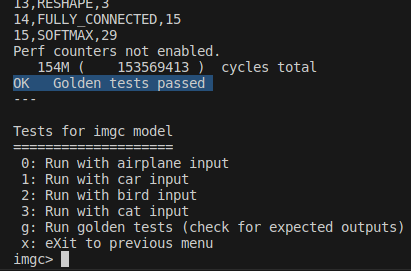
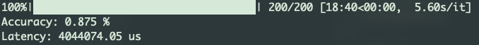

Final Project: MLPerf™ Tiny#
Changed in version 12/8,19:05: Grading Formula update:
It is okay now for not passing the golden test, as long as you can keep the accuracy higher than 75%.
Introduction#
In the final project, you are required to design a CFU for MLPerf™ Tiny image classification benchmark model and targeting on decreasing latency.
Also, Your design will be benchmarked by the MLPerf™ Tiny Benchmark Framework. Here is its Github page for detailed information aboud MLPerf™ Tiny.
Selected Model#
We use MLPerf™ Tiny Image Classification Benchmark Model for the project. It is a tiny version of ResNet, consisting of Conv2D, Add, AvgPool2D, FC, and Softmax.
You don’t need to integrate the model on yourself. The model is already included in CFU. See ${CFU_ROOT}/common/src/models/mlcommons_tiny_v01/imgc/. Also, you can inspect the architecture of the selected model with Netron. It might provide you some inspiration for your design.
Setup#
Clone the fork of final project to get the final project template
$ git clone https://github.com/nycu-caslab/AAML2024-project.git
Then run the setup script
$ cd ${CFU_ROOT}
$ ./scripts/setup
Final project template path: ${CFU_ROOT}/proj/AAML_final_proj
Dependency (python): pyserial, tdqm
Requirements#
Files#
You can modify the following files:
Kernel API
tensorflow/lite/micro/kernels/add.cctensorflow/lite/micro/kernels/conv.cctensorflow/lite/micro/kernels/fully_connected.cctensorflow/lite/micro/kernels/softmax.cctensorflow/lite/micro/kernels/pooling.cc
Kernel Implementation
tensorflow/lite/kernels/internal/reference/integer_ops/add.htensorflow/lite/kernels/internal/reference/integer_ops/conv.htensorflow/lite/kernels/internal/reference/integer_ops/fully_connected.htensorflow/lite/kernels/internal/reference/integer_ops/softmax.htensorflow/lite/kernels/internal/reference/integer_ops/pooling.h
HW design
cfu.v
Important
No other source code in ${CFU_ROOT}/common/** and ${CFU_ROOT}/third_party/** should be overriden unless asking for permission.
Golden Test#
You may use the golden to verify your design, but note that there are flexibility for your accuracy, so you may or may not reference on this test as long as your accuracy is larger than 75%.
After
make prog && make load, input11gto run golden test of MLPerf Tiny imgc model. The result should be like:

Architecture#
You can also modify the architecture or the parameters of the selected model. The classification accuracy of your design is evaluated.
However, DO NOT RETRAIN THE MODEL ON TESTING IMAGES.
Performance#
We use the evaluation script to evaluate your design.
Usage:
make prog && make load> reboot litex > turn off litex-term > run eval scriptpython eval_script.pyin${CFU_ROOT}/proj/AAML_final_pro--port {tty_path:-/dev/ttyUSB1}: Add this argument to select correct serial port
The result should be like:

Improve the performance of your design to decrease the latency as low as it could be.
Note
If you just want to know the latency of your design, it would be easier to run a test input instead of whole process of evaluation.
Presentation - 30%#
Important
You will receive 0 point if you don’t present your work
The presentation takes 30% of your final project score.
You should give a presentation in the last class of this semester
Each team has 5 minutes to present at most
Your presentation should contains
The introduction of your design
SW
HW
(Optional) The implementation of your design
SW
HW
The evaluation of your design
Accuracy (if you modify the selected model)
Latency
Grading Policy#
We will compare the performance of your design with our reference design (simply the SIMD in lab 2) and will not be released.
ACC won’t be tested if you didn’t modify the model
TA’s latency:
Latency and accuracy will be measured by the provided evaluation script (the following is the original performance).

Ranking will be released with everyone’s evaluation result after the deadline.
Grading Formula#
Accuracy:
Important
Note that better ACC won’t give you better score!!
Latency :
Presentation
Final score:
Submission#
Please fork the repo and push your work to it
If you use your own model:
Put pretrained model under
${CFU_ROOT}/proj/AAML_final_projor somewhere else we can easily find itPut your training script in your final project repo and leave a message about where to find them in the README.md under your CFU project direcrtory
Grading workflow will be:
Clone your fork
Apply your custom model if needed
make prog && make loadRun evaluation script
Record measurements